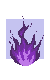
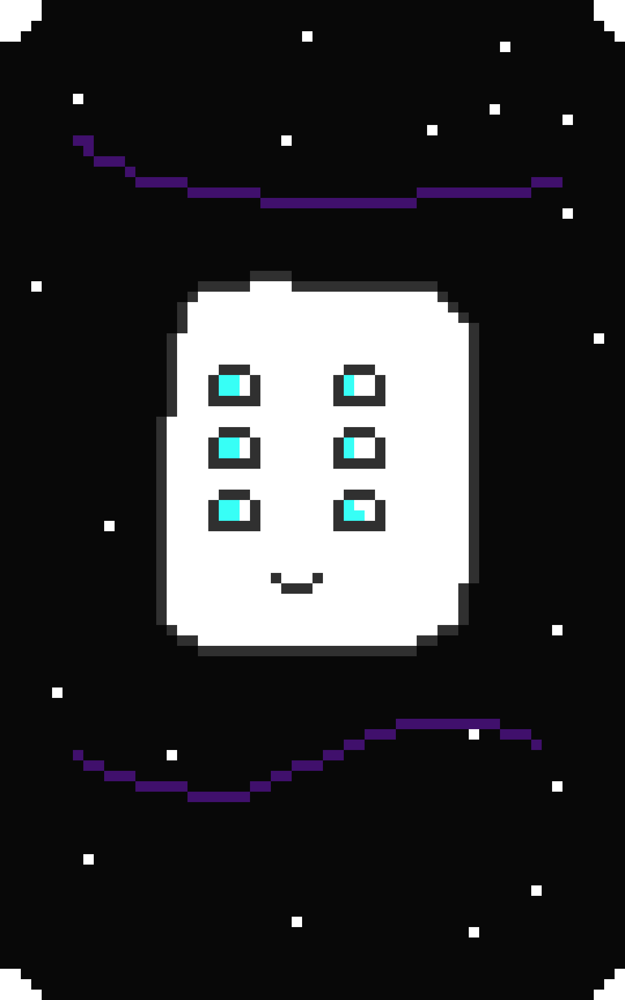
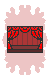
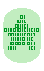
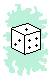
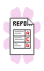


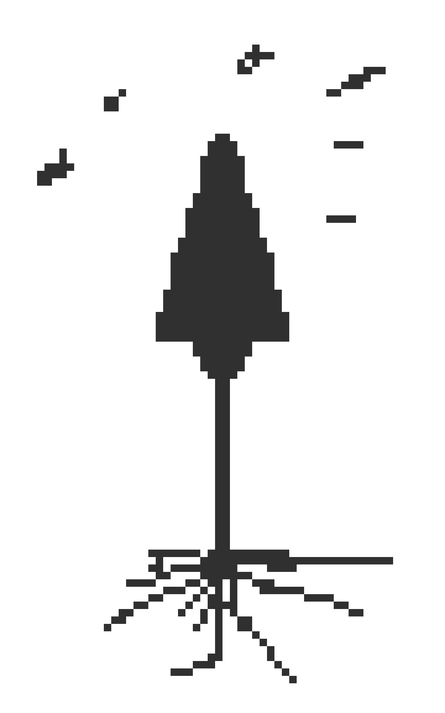
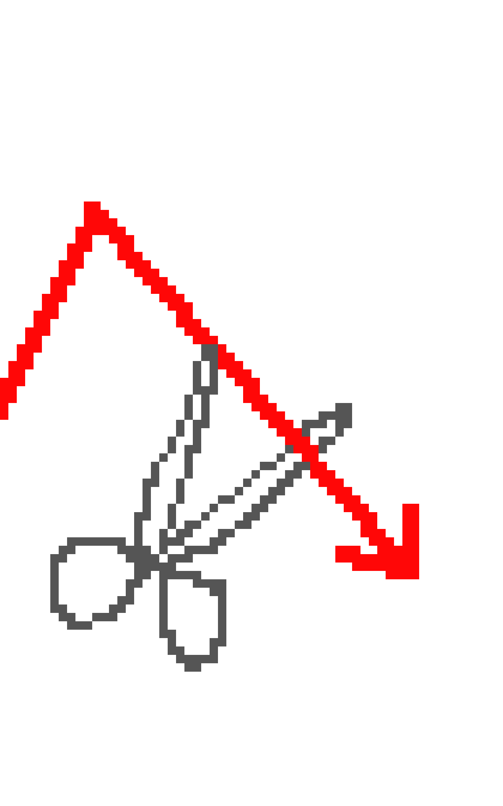
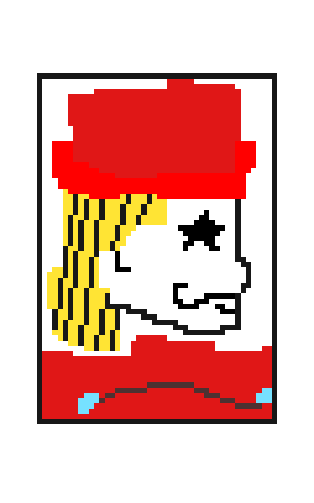
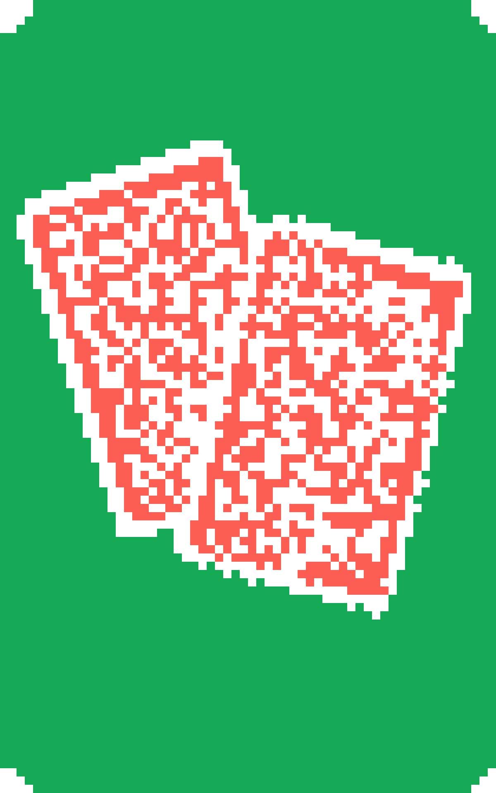
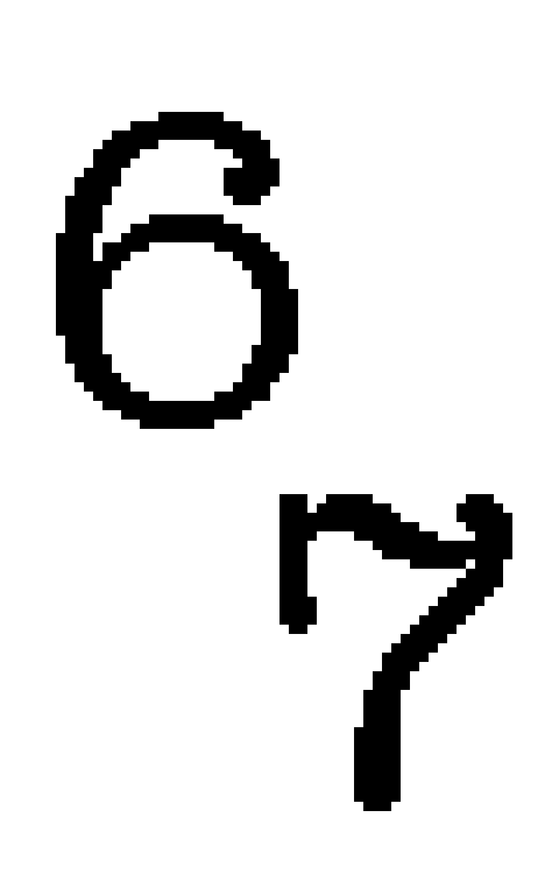


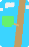
Generated from stellatro-game/stellatro_game/jokers.py and the GUI joker image mapping.
pre_card_phase: changes or retriggers cards before they are scored.apply_card_phase: applies while each scored card is being processed.post_card_phase: applies after hand evaluation and card scoring.none: no custom phase hook.| Image | Name | Description | Phase |
|---|---|---|---|
| Regular Joker | No special abilities. | `none` |
| Jolly Joker | +3 Mult if the full played hand includes a Pair. | `post_card_phase` |
| Sly Joker | +10 Chips if the full played hand includes a Pair. | `post_card_phase` |
| Zany Joker | +5 Mult if the full played hand includes Three of a Kind. | `post_card_phase` |
| Cheeky Joker | +4 Mult if the full played hand includes Two Pair. | `post_card_phase` |
| Witty Joker | +6 Mult if the full played hand includes a Straight. | `post_card_phase` |
| Daring Joker | +7 Mult if the full played hand includes a Flush. | `post_card_phase` |
| Merry Joker | +15 Chips if the full played hand includes Three of a Kind. | `post_card_phase` |
| Jovial Joker | +12 Chips if the full played hand includes Two Pair. | `post_card_phase` |
| Lively Joker | +20 Chips if the full played hand includes a Straight. | `post_card_phase` |
| Vibrant Joker | +25 Chips if the full played hand includes a Flush. | `post_card_phase` |
| Diamond Joker | Scored cards with Diamond suit give +2 Mult. | `apply_card_phase` |
| Heart Joker | Scored cards with Heart suit give +2 Mult. | `apply_card_phase` |
| Club Joker | Scored cards with Club suit give +2 Mult. | `apply_card_phase` |
| Spade Joker | Scored cards with Spade suit give +2 Mult. | `apply_card_phase` |
| Walkie Talkie | Each scored 10 or 4 gives +10 Chips and +4 Mult when scored. | `apply_card_phase` |
| Sock and Buskin | Retrigger all scored face cards. | `pre_card_phase` |
| Sun God | For every heart card scored, get X1.5 Mult | `apply_card_phase` |
| Eigth College | Each scored 8 gives +80 chips and +8 Mult when scored | `apply_card_phase` |
| PhotoGraph Joker | First scored face card gives X2 Mult when scored | `pre_card_phase`, `apply_card_phase` |
| Flower Pot | x2.5 Mult if the full played hand contains a diamond, heart, spade, and club | `post_card_phase` |
| The Duo | If the full played hand contains a pair, x2 Mult | `post_card_phase` |
| The Trio | If the full played hand contains a Three of a Kind, x2.5 Mult | `post_card_phase` |
| The Family | If the full played hand contains a Four of a Kind, x4 Mult | `post_card_phase` |
| The Tribe | If the full played hand contains a Flush, x3 Mult | `post_card_phase` |
| The Order | If the full played hand contains a Straight, x3 Mult | `post_card_phase` |
| UC Socially Dead | If the full played hand contains only a High Card, x5 Mult | `post_card_phase` |
| Bit Byte | Face cards give +2 Mult, number cards give +8 Chips. | `apply_card_phase` |
| Student ID | If the full played hand contains a single ace and no face cards, +120 Mult | `post_card_phase` |
| Seltzer | Retrigger each played card that has rank <= 8 | `pre_card_phase` |
| Last Lecture | Final played card gets retriggered 2 extra times | `pre_card_phase` |
| Dining Hall Prices | Increases played cards with rank 2,3,4,5 by 5 | `pre_card_phase` |
| Half Joker | +15 Mult if scored hand is either all <= 8, or >= 9 | `post_card_phase` |
| Fibonacci Joker | Each played Ace, 2, 3, 5, or 8 gives +5 Mult when scored. | `apply_card_phase` |
| Scary Face Joker | Each face card gives +30 chips. | `apply_card_phase` |
| Mirror | Face Cards give +50 mult, but no chips | `apply_card_phase` | |
 | Plasma | Balance chips and mult, diminished return if chips and mult are far apart | `post_card_phase` |
 | Star Plasma | Gain 2x stellas in each played card | `pre_card_phase` |
| Jam Session | +6 mult for each extra trigger on scored cards. | `post_card_phase` | |
| Spotlight | First played face card gains +10 Chips and +4 Mult for each other face card in full played hand. | `pre_card_phase`, `apply_card_phase` | |
| Color Theory | x1.5 Mult for each additional suit represented in played hand. | `post_card_phase` | |
| Study Group | +12 Chips for each distinct rank among scored cards. | `post_card_phase` | |
| Group Project | +8 Chips and +2 Mult for each scored card with rank 8 or lower. | `post_card_phase` | |
 | Encore | Final card gets retriggered once for each other card sharing its suit. | `pre_card_phase` |
| Wish Upon a Star | Lowest-ranked played card gains 8 Stella before scoring. | `pre_card_phase` | |
 | Binary Star | Even played cards gain 2 stella | `pre_card_phase` |
 | Pips | Played cards gain stella equal to their rank, but give no chips when scored. | `pre_card_phase`, `apply_card_phase` |
 | Report Card | Each ace gives the first card in full played hand 11 stella | `pre_card_phase` |
| Cache Coherence | Played cards of the same suit have the same number of stella (max) | `pre_card_phase` |
| Stargazing | Each played card's stella gives one retrigger | `pre_card_phase` |
| Boiling Point | If total number of stella across played cards is greater than 12, x3 Mult | `post_card_phase` |
| Galaxy | +0.5x Mult per stella across played cards, base 1x Mult | `post_card_phase` |
| Popcorn | +16 Mult, -1 per stella on played cards | `post_card_phase` |
| Starcorn | Each card gives (rank * stella) mult | `apply_card_phase` | |
| Supernova | Each card with stella gives x(1.1)^stella mult when scored. | `apply_card_phase` | |
| Snowball | +40 Chips per stella on played cards | `post_card_phase` | |
| Constellation | Gain +8 chips and +3 mult for each Stella on scored cards. | `post_card_phase` |
 | Arrowhead | Played cards with Spade suit give +18 Chips. | `apply_card_phase` |
 | Loss Cut | For every card that wasn't scored, gain +30 Chips. | `post_card_phase` |
 | Starjack | The first face card gains 10 stella. | `pre_card_phase` |
 | Blackjack | x4 Mult if all played cards' score adds up to 21. | `post_card_phase` |
 | Six Seven | If the full played hand contains two cards with 6 and 7 stella, gain +67 Mult | `post_card_phase` |
| Thrice Twice | If the full played hand contains a Full House, each card gains 3 stella | `pre_card_phase` | |
| Fallen Star | Lowest scored card gains stella equal to the highest scored rank, and highest scored card gains stella equal to the lowest scored rank. | `pre_card_phase` |
| Star Fish | Scored cards in pairs gain +2 stella, triplets gain +4 stella, and quads gain +8 stella. | `pre_card_phase` |
 | Branch Out | Each played card carries half of the previous played card's stella. | `pre_card_phase` |